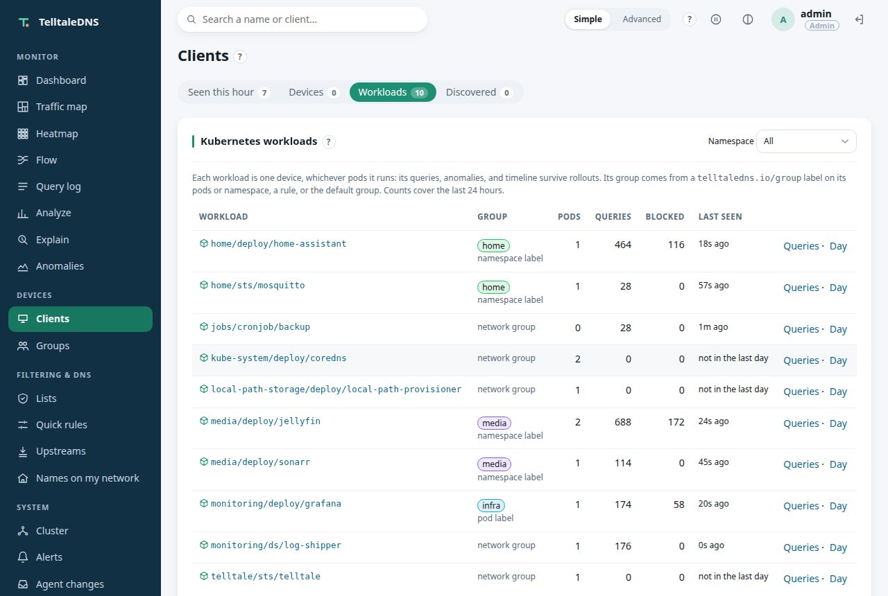
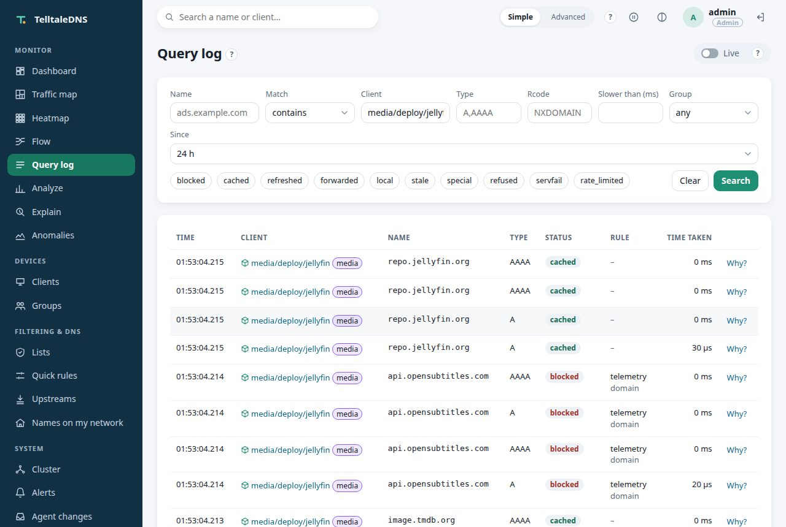
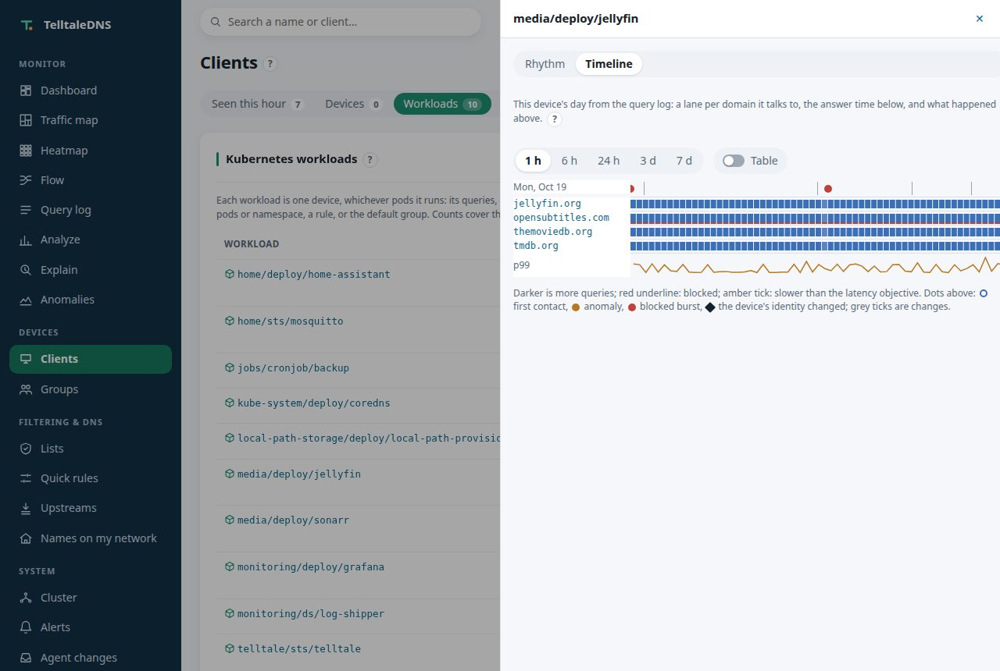
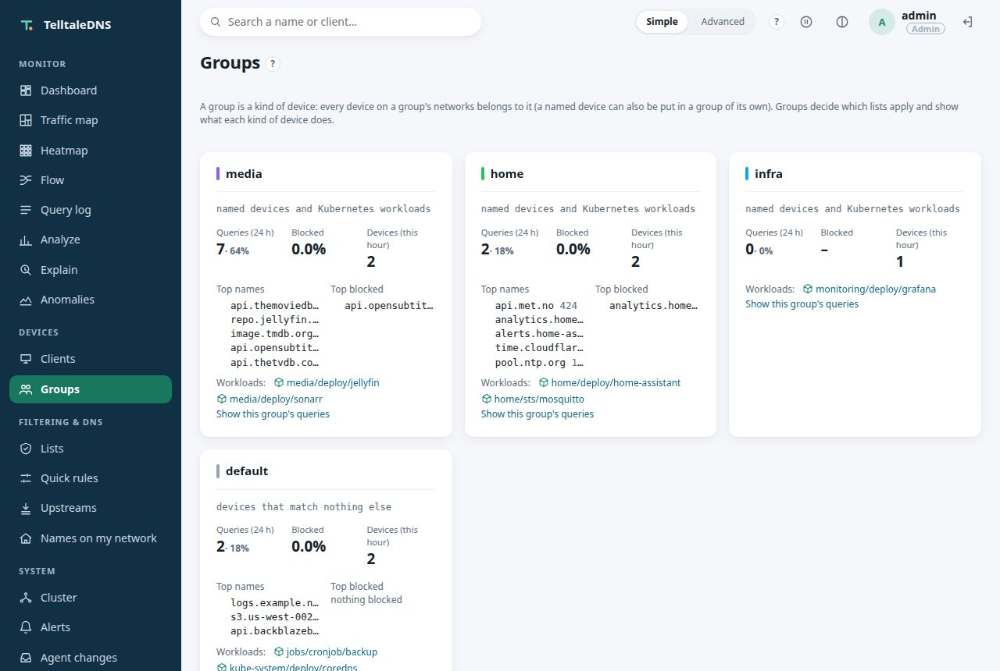
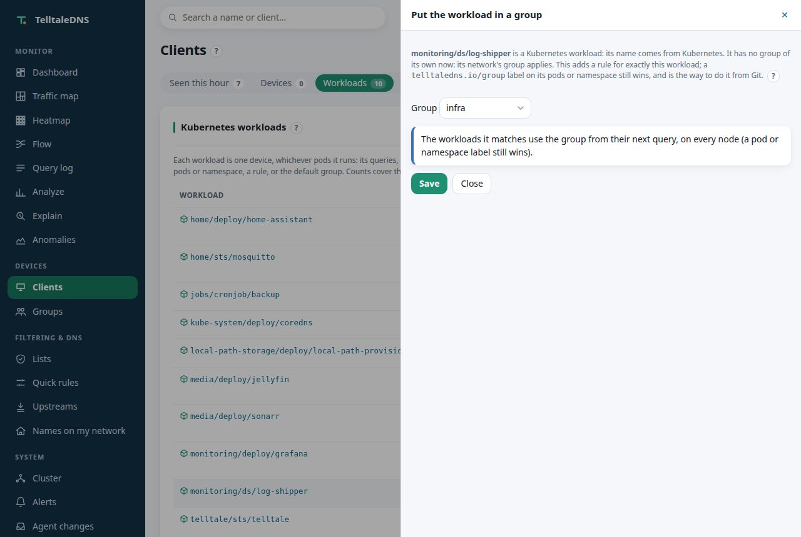

Kubernetes
Which workload asked
for that domain?
TelltaleDNS watches your cluster's pods and names each one by the workload that runs it. media/deploy/jellyfin is one device, whichever pods it runs, so you see what your apps talk to, keep one history across rollouts, and filter each namespace with the groups you already use.

Why it matters
Pod addresses don't tell you anything
A query log full of 10.42.1.37 doesn't say which app asked, and that address belongs to another pod after the next rollout. Answering "which workload talked to that domain?" usually takes a service mesh or a flow-logging tool. Here it costs one table lookup on the query, and every view that shows a device shows the workload instead.
One device per workload
A Deployment's three replicas are one device. Its top domains, its anomaly baseline, its rhythm, its new-device alert, and its day on the timeline carry on when pods are replaced, rescheduled, or scaled. Every run of a CronJob counts under the CronJob, even a run that asks DNS the moment it starts.
Names that stay true
The query log keeps each pod's own address. Each row is named by the workload that held the address when the query was made, so an address reused after a rollout never relabels the past.
Policy per namespace
Label a namespace telltaledns.io/group=iot and every pod in it gets the iot group's lists, quick rules, blocked services, schedules, and upstreams. No new kind of rule to learn.
From the cluster, not a guess
A workload's identity is certain: it's what the API server says, with its pods and app labels as evidence. "Name this device" is off for workloads, because Kubernetes already named them.
Read-only, controller only
Only the controller pod gets a service-account token, and its role can only get, list, and watch pods and namespaces. Resolver pods have no token, and no Kubernetes client library is added.
DNS never waits on it
The watcher runs on its own background thread. If the API server is unreachable, pods keep their last names, DNS answers as always, and after 15 minutes the health icon turns amber and an alert can fire.
See it
What your apps talk to




How it works
Pods ask TelltaleDNS directly
- The controller watches pods and namespaces (read-only) and maps each pod address to its workload from the pod's owner: a ReplicaSet's Deployment, a StatefulSet, a DaemonSet, a Job or its CronJob, or the pod itself.
- Every node gets the table over the cluster channel within a couple of seconds, and asks again every minute, so resolver pods recognize pods on the query path and a Pi in the cluster names the rows it ships.
- Pods send their DNS to TelltaleDNS: the kubelet's cluster DNS for the whole cluster, or a workload's own
dnsConfig. TelltaleDNS sendscluster.localon to CoreDNS, so Service names work as before.
Through CoreDNS forwarding, every pod would look like CoreDNS: pods have to ask TelltaleDNS themselves. The guide shows both ways, with the k3s setting.
For agents
In the API and MCP too
GET /api/v1/kubernetes/workloads lists the workloads with their groups and counts, and a workload's name works as client anywhere a device goes: the query log, the timeline, rhythm, identity, and explain. MCP has list_workloads and get_workload, and plan_assign_client with a workload's name plans a group rule for it. See AI agents.